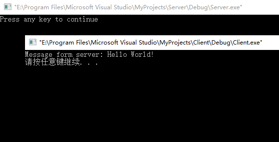

本文仅仅为个人学习笔记，内容多来源网络，不保证系统性、严谨性。另外本文局限于Windows下的简单的SOCKET编程。
语言：C++
前言
本文仅仅涉及到Windows中的SOCKET编程实现。在linux中，认为网络连接是一个文件，也有文件描述符。所以当使用Socket创建连接后，应使用普通的文件操作函数来传输数据，即：使用read()读取从远程计算机传来的数据，用write()向远程计算机写入数据。而在，Windows中会把Socket当作一个网络连接来对待，使用recv() / send() 函数发送和接收。还有其他差别，在此仅仅有个大致了解。
C/S模式
C/S模式，即Client/Server模式。TCP/IP通信中主要进行的就是C/S交互。
服务端：建立socket，申明自身的port和IP，并绑定到socket，使用listen监听，然后不断用accept去查看是否有连接。如果有，捕获socket，并通过recv获取消息的内容，通信完成后调用closeSocket关闭这个对应accept到的socket。如果不需要等待任何客户端连接，那么用closeSocket直接关闭自身的socket。
客户端：建立socket，通过端口号和地址确定目标服务器，使用Connect连接到服务器，send发送消息，等待处理，通信完成后调用closeSocket关闭socket。
代码实现
Server端
服务器端代码
Server.cpp:1
2
3
4
5
6
7
8
9
10
11
12
13
14
15
16
17
18
19
20
21
22
23
24
25
26
27
28
29
30
31
32#include <stdio.h>
#include <winsock2.h>
#pragma comment (lib, "ws2_32.lib") //加载 ws2_32.dll
int main(){
//初始化 DLL
WSADATA wsaData;
WSAStartup( MAKEWORD(2, 2), &wsaData);
//创建套接字
SOCKET servSock = socket(PF_INET, SOCK_STREAM, IPPROTO_TCP);
//绑定套接字
sockaddr_in sockAddr;
memset(&sockAddr, 0, sizeof(sockAddr)); //每个字节都用0填充
sockAddr.sin_family = PF_INET; //使用IPv4地址
sockAddr.sin_addr.s_addr = inet_addr("127.0.0.1"); //具体的IP地址
sockAddr.sin_port = htons(1234); //端口
bind(servSock, (SOCKADDR*)&sockAddr, sizeof(SOCKADDR));
//进入监听状态
listen(servSock, 20);
//接收客户端请求
SOCKADDR clntAddr;
int nSize = sizeof(SOCKADDR);
SOCKET clntSock = accept(servSock, (SOCKADDR*)&clntAddr, &nSize);
//向客户端发送数据
char *str = "Hello World!";
send(clntSock, str, strlen(str)+sizeof(char), NULL);
//关闭套接字
closesocket(clntSock);
closesocket(servSock);
//终止 DLL 的使用
WSACleanup();
return 0;
}
代码解析：
（1）引用
1 | #include <stdio.h> |
Windows 下的 socket 程序依赖 Winsock.dll 或 ws2_32.dll，必须提前加载。
（2）socket()创建套接字
1 | //创建套接字 |
socket()函数：
int socket(int domain, int type, int protocol);domain：即协议域，又称为协议族（family）。常用的协议族有，AF_INET、AF_INET6、AF_LOCAL（或称AF_UNIX，Unix域socket）、AF_ROUTE等等。协议族决定了socket的地址类型，在通信中必须采用对应的地址，如AF_INET决定了要用ipv4地址（32位的）与端口号（16位的）的组合、AF_UNIX决定了要用一个绝对路径名作为地址。
type：指定socket类型。常用的socket类型有，SOCK_STREAM、SOCK_DGRAM、SOCK_RAW、SOCK_PACKET、SOCK_SEQPACKET等等（socket的类型有哪些？）。
protocol：故名思意，就是指定协议。常用的协议有，IPPROTO_TCP、IPPTOTO_UDP、IPPROTO_SCTP、IPPROTO_TIPC等，它们分别对应TCP传输协议、UDP传输协议、STCP传输协议、TIPC传输协议（这个协议我将会单独开篇讨论！）。
注意：并不是上面的type和protocol可以随意组合的，如SOCK_STREAM不可以跟IPPROTO_UDP组合。当protocol为0时，会自动选择type类型对应的默认协议。
（3）bind()绑定套接字
1 | //绑定套接字 |
通过 bind() 函数将套接字 servSock 与特定的 IP 地址和端口绑定，IP 地址和端口都保存在 sockaddr_in 结构体中。
bind()函数
正如上面所说bind()函数把一个地址族中的特定地址赋给socket。例如对应AF_INET、AF_INET6就是把一个ipv4或ipv6地址和端口号组合赋给socket。int bind(int sockfd, const struct sockaddr *addr, socklen_t addrlen);
函数的三个参数分别为：sockfd：即socket描述字，它是通过socket()函数创建了，唯一标识一个socket。bind()函数就是将给这个描述字绑定一个名字。
addr：一个const struct sockaddr *指针，指向要绑定给sockfd的协议地址。这个地址结构根据地址创建socket时的地址协议族的不同而不同，如ipv4对应的是：
2
3
4
5
6
7
8
9
>sa_family_t sin_family;
>in_port_t sin_port;
>struct in_addr sin_addr;
>};
>struct in_addr {
>uint32_t s_addr;
>};
>ipv6对应的是：
2
3
4
5
6
7
8
9
10
11
>sa_family_t sin6_family;
>in_port_t sin6_port;
>uint32_t sin6_flowinfo;
>struct in6_addr sin6_addr;
>uint32_t sin6_scope_id;
>};
>struct in6_addr {
>unsigned char s6_addr[16];
>};
>Unix域对应的是：
2
3
4
5
6
>struct sockaddr_un {
>sa_family_t sun_family;
>char sun_path[UNIX_PATH_MAX];
>};
>addrlen：对应的是地址的长度。
通常服务器在启动的时候都会绑定一个众所周知的地址（如ip地址+端口号），用于提供服务，客户就可以通过它来接连服务器；而客户端就不用指定，有系统自动分配一个端口号和自身的ip地址组合。这就是为什么通常服务器端在listen之前会调用bind()，而客户端就不会调用，而是在connect()时由系统随机生成一个。
网络字节序与主机字节序
主机字节序就是我们平常说的大端和小端模式：不同的CPU有不同的字节序类型，这些字节序是指整数在内存中保存的顺序，这个叫做主机序。引用标准的Big-Endian和Little-Endian的定义如下：
a) Little-Endian就是低位字节排放在内存的低地址端，高位字节排放在内存的高地址端。
b) Big-Endian就是高位字节排放在内存的低地址端，低位字节排放在内存的高地址端。
网络字节序：4个字节的32 bit值以下面的次序传输：首先是0～7bit，其次8～15bit，然后16～23bit，最后是24~31bit。这种传输次序称作大端字节序。由于TCP/IP首部中所有的二进制整数在网络中传输时都要求以这种次序，因此它又称作网络字节序。字节序，顾名思义字节的顺序，就是大于一个字节类型的数据在内存中的存放顺序，一个字节的数据没有顺序的问题了。
所以： 在将一个地址绑定到socket的时候，请先将主机字节序转换成为网络字节序，而不要假定主机字节序跟网络字节序一样使用的是Big-Endian。由于 这个问题曾引发过血案！公司项目代码中由于存在这个问题，导致了很多莫名其妙的问题，所以请谨记对主机字节序不要做任何假定，务必将其转化为网络字节序再 赋给socket。
主机字节序参考|史D芬周
（4）listen() 监听请求
1 | //进入监听状态 |
int listen(int sockfd, int backlog);
sockfd:要监听的socket描述字
backlog:相应socket可以排队的最大连接个数。
作为一个服务器，在调用socket()、bind()之后就会调用listen()来监听这个socket，如果客户端这时调用connect()发出连接请求，服务器端就会接收到这个请求。
socket()函数创建的socket默认是一个主动类型的，listen函数将socket变为被动类型的，等待客户的连接请求。
（5）accept()接收请求
1 | //接收客户端请求 |
int accept(int sockfd, struct sockaddr addr, socklen_t addrlen);
sockfd:服务器的socket描述字，
*addr:指向struct sockaddr *的指针，用于返回客户端的协议地址。
*addrlen:协议地址的长度。
如果accpet成功，那么其返回值是由内核自动生成的一个全新的描述字，代表与返回客户的TCP连接。
TCP服务器端依次调用socket()、bind()、listen()之后，就会监听指定的socket地址了。TCP客户端依次调用socket()、connect()之后就想TCP服务器发送了一个连接请求。TCP服务器监听到这个请求之后，就会调用accept()函数取接收请求，这样连接就建立好了。之后就可以开始网络I/O操作了，即类同于普通文件的读写I/O操作。
（6）send()发送数据
1 | //向客户端发送数据 |
ssize_t send(int sockfd, const void *buf, size_t len, int flags);
（7）closesocket()关闭连接
1 | //关闭套接字 |
在服务器与客户端建立连接之后，会进行一些读写操作，完成了读写操作就要关闭相应的socket描述字，好比操作完打开的文件要调用fclose关闭打开的文件。
Client端
客户端代码
Client.cpp1
2
3
4
5
6
7
8
9
10
11
12
13
14
15
16
17
18
19
20
21
22
23
24
25
26
27
28
29#include <stdio.h>
#include <stdlib.h>
#include <WinSock2.h>
#pragma comment(lib, "ws2_32.lib") //加载 ws2_32.dll
int main(){
//初始化DLL
WSADATA wsaData;
WSAStartup(MAKEWORD(2, 2), &wsaData);
//创建套接字
SOCKET sock = socket(PF_INET, SOCK_STREAM, IPPROTO_TCP);
//向服务器发起请求
sockaddr_in sockAddr;
memset(&sockAddr, 0, sizeof(sockAddr)); //每个字节都用0填充
sockAddr.sin_family = PF_INET;
sockAddr.sin_addr.s_addr = inet_addr("127.0.0.1");
sockAddr.sin_port = htons(1234);
connect(sock, (SOCKADDR*)&sockAddr, sizeof(SOCKADDR));
//接收服务器传回的数据
char szBuffer[MAXBYTE] = {0};
recv(sock, szBuffer, MAXBYTE, NULL);
//输出接收到的数据
printf("Message form server: %s\n", szBuffer);
//关闭套接字
closesocket(sock);
//终止使用 DLL
WSACleanup();
system("pause");
return 0;
}
由于大部分函数已在服务端解释，客户端代码只解释部分客户端没涉及到的函数。
（1）connect()连接请求
1 | //向服务器发起请求 |
客户端通过调用connect函数来建立与TCP服务器的连接。
int connect(int sockfd, const struct sockaddr *addr, socklen_t addrlen);
sockfd:客户端的socket描述字
*addr:服务器的socket地址
*addrlen:socket地址的长度
（2）recv()接收数据
1 | //接收服务器传回的数据 |
ssize_t recv(int sockfd, void *buf, size_t len, int flags);
运行测试
先运行服务端，再运行客户端。
